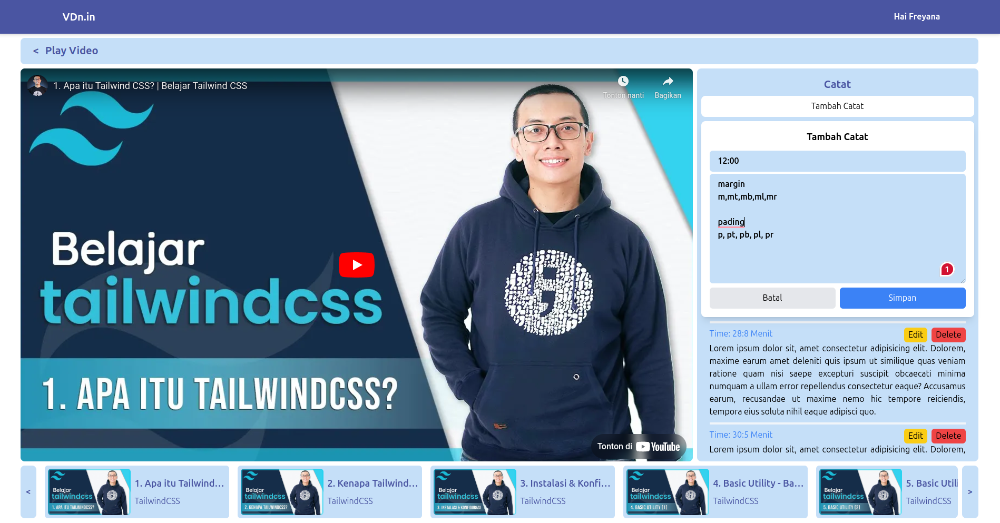
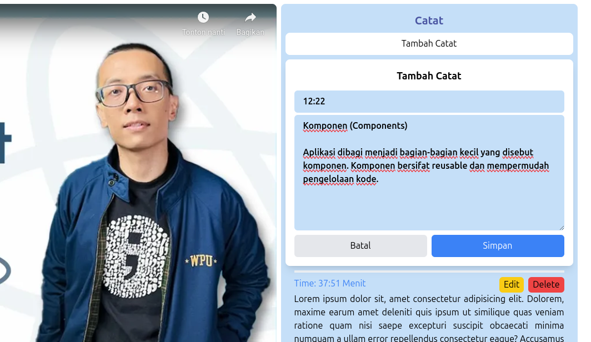
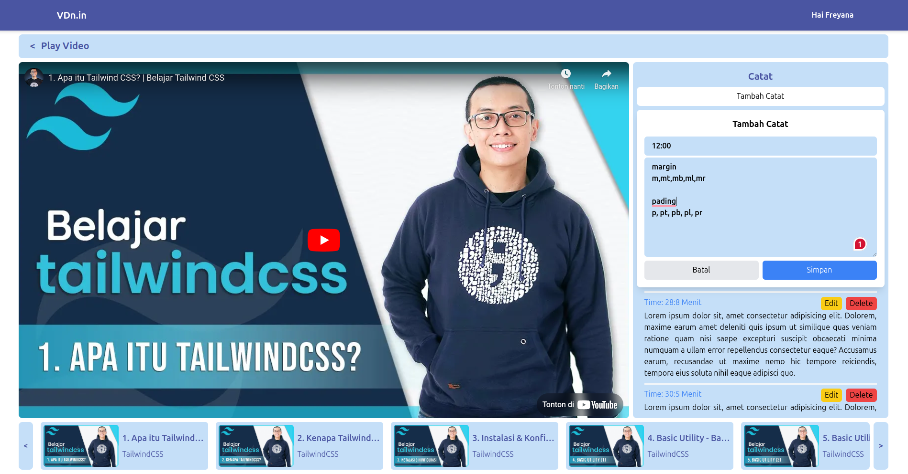
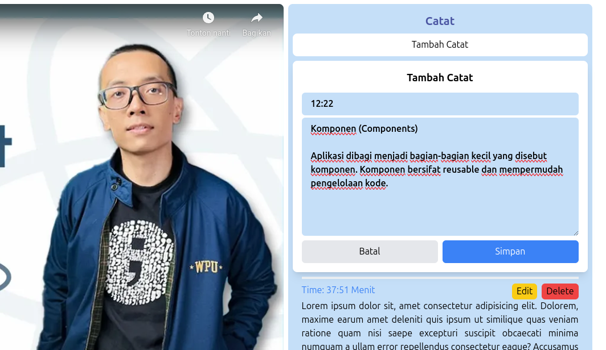

Balik
VDn.in
VDn.in ( Video Note ) adalah platform unik yang dirancang untuk membantu Anda mencatat ide, wawasan, dan materi dari video YouTube. Dengan fitur unik kami, Anda dapat menambahkan catatan pada waktu tertentu dalam video, membuat playlist untuk mengelompokan video dengan mudah, dan mengakses kembali catatan Anda hanya dengan satu klik. Baik Anda seorang mahasiswa, profesional, atau kreator konten, VDN adalah alat yang sempurna untuk mendukung proses belajar dan kreativitas Anda.
Fitur
- Note Timestamp
- Playlist
Teknologi yang digunakan:
- Laravel 11 (PHP)
- TailwindCSS (CSS Framework)
Hasil Akhir
Project berhasil diselesaikan, program utama dapat digunakan dengan baik, pengguna dapat menambahkan video ke akunnya dan dapat juga mengelompokan video yang tersimpan, pengguna dapat menambah catatannya pada detik yang sedang berlangsung, dan ketika user menekan time pada catatan nya Timestamp akan melompat pada waktu yang dituju
Gambar Project
Tambah Video Tambah Video
Tambah Video
 Dashboard
Play Video

Tambah Catatan

Kembali ke Halaman Utama
Dashboard
Play Video

Tambah Catatan

Kembali ke Halaman Utama